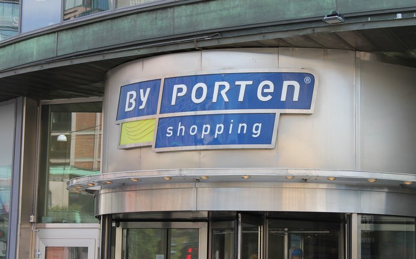

Oslo City
Oslo kjøpesenter
Oslo City er en av Oslos største kjøpesentre, og befinner seg i hjertet av Oslo. De kan by på hele 93 butikker på 5 etasjer. Alt fra klær og sko, elektronikk og restauranter!
lukk
Byporten

Oslo kjøpesenter
I Byporten har du en rekke butikker og resturanter som du ikke finner på andre kjøpesentre. De fleste butikkene som befinner seg her er de første som ble etablert i Norge! Dette er et sentralt møtested, hvor bygget deler vegger med Oslo S og Oslo City, og Scandic Hotell i øvre etasje!
lukk